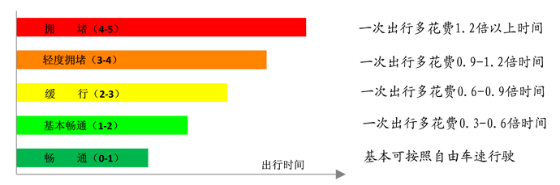

深圳交通指数帮助
一、深圳市交通指数是什么？
深圳市道路交通运行指数（简称“交通指数”）是对路网交通总体运行状况进行定量化评估的综合性指标，与传统的车速、流量等参数相比，具有直观、简单的特点。类似于体检时量体温，交通指数让人们不仅是模糊地知道堵或不堵，更能清楚地了解堵到何种程度，从而对全市整体交通，以及特定片区或路段的交通运行情况有一个直观量化的了解，为市民出行提供有益参考。
深圳市发布的交通指数取值范围为0～5，分为畅通（0～1）、基本畅通（1～2）、缓行（2～3）、轻度拥堵（3～4）和拥堵（4～5）等五个等级，分别用绿色、浅绿、黄色、橙色和红色表示。交通指数越大表明一次出行相比顺畅状况（如凌晨时刻）多花费的时间越长。例如，当处于“畅通”等级时，车辆可如在凌晨时段一样自由行驶；处于“拥堵”等级时，路上花费的时间将至少是顺畅状况下的2倍以上，拥堵状况严重。

交通指数和出行时间关系图
二、深圳市交通指数怎么算？
深圳市交通指数计算利用了全市14000余辆出租车的实时GPS数据（包含车速、位置等），相当于每天有万余辆车不断地在全市各条道路上巡回，持续发回调查结果，相比人工调查等传统方法在覆盖范围和准确性上优势明显。利用出租车GPS数据，能够计算各条道路、各个片区以及全市路网的平均车速和出行时间。通过实地调查和专家评分，建立出行时间与交通指数的换算关系模型，这样由点及线、由线及面，一步步推算路段、关口、片区以及全市等不同空间范围的交通指数，具有相对稳定可靠的优点，能够较好地贴合人们对实际路况的主观感受。
由于出租车与社会车辆在驾驶习惯、行驶路线等存在一定的差异，可能造成计算误差。如少数严重拥堵或偏远的道路出租车样本数量不足，使得计算和评估结果与实际情况存在偏差，或因无样本而不能计算指数（在路况地图中以灰色显示）。针对这一问题，现已着手在近期接入固定检测器等多种来源基础数据，进一步提高指数和车速等指标计算的准确性。
更多信息，请访问深圳市交通运输委员会